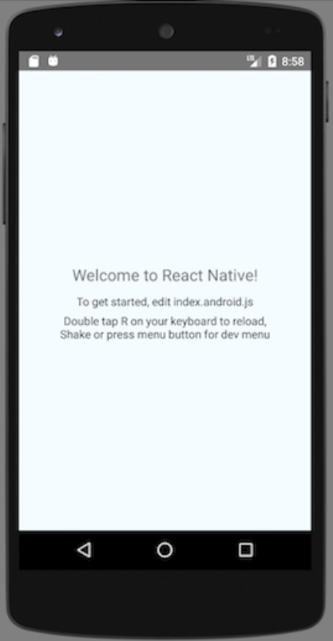

react-native入门¶
虚拟机或真机调试¶
总结：进入开发者模式，打开USB调试即可。
不同手机进入开发者模式的方法不同， 如honor需要进入 关于手机 后点击版本号十次， 而OPPO则可以直接在手机的辅助选项中打开。
连接完毕后，终端输入 adb devices 检查连接情况。ADB报错通过 adb start-server 和 adb kill-server 重试。
创建第一个项目¶
打开终端，cd到目录下，输入 react-native init ProjectName
项目初始化完毕后，cd到项目内 react-native run-android
过程中如果出现dependence（依赖）问题可以 npm install 后再重新run
静待项目loading，完成后在手机上出现React-native的简约风示例程序
虚拟机通过Menu键、真机仅需摇晃手机 进入开发者控制台体验RN框架中的调试功能 ，包括重载、JS 调试、热重载、事件监管。
至此环境搭建完成，欢迎您进入React-native的美好世界（上贼船，入煤坑）